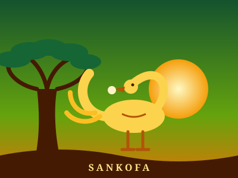

O Cais do Valongo, localizado na região portuária do Rio de Janeiro, foi um dos principais locais de desembarque de africanos escravizados no Brasil durante o século XIX. Sua história está diretamente ligada ao período da escravidão e à formação da sociedade brasileira.
Com o passar dos anos, o cais foi aterrado e acabou ficando escondido sob outras construções. Somente em 2011, durante obras de revitalização da região portuária, suas estruturas foram redescobertas por arqueólogos, revelando importantes vestígios da história brasileira.
